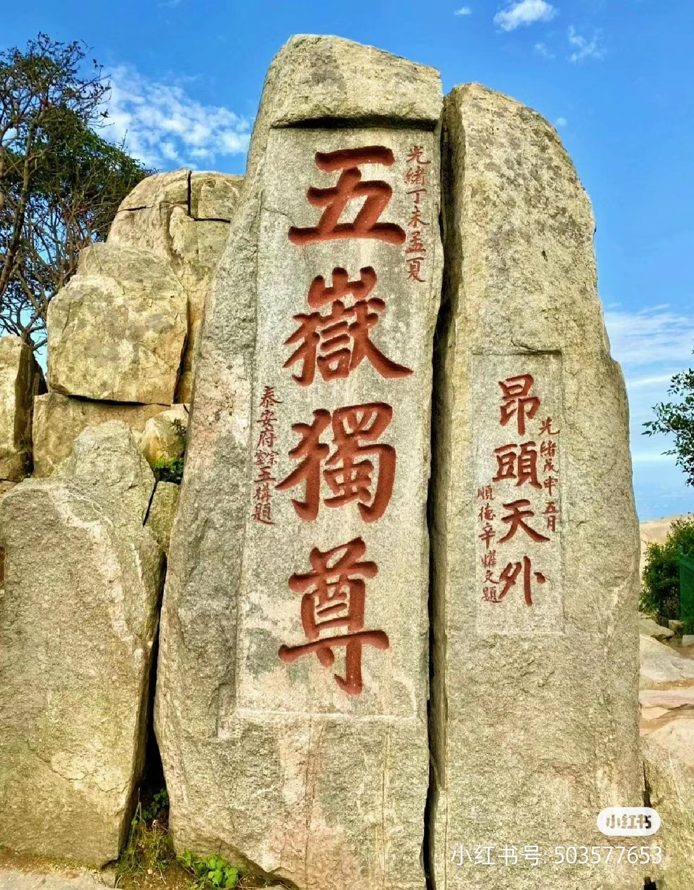
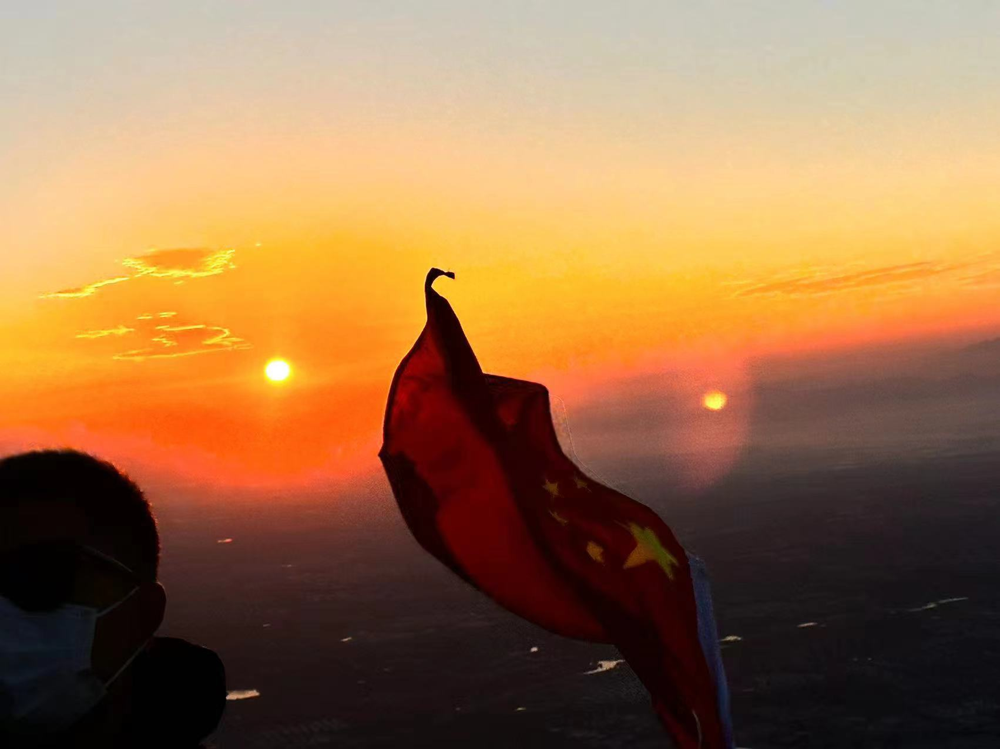
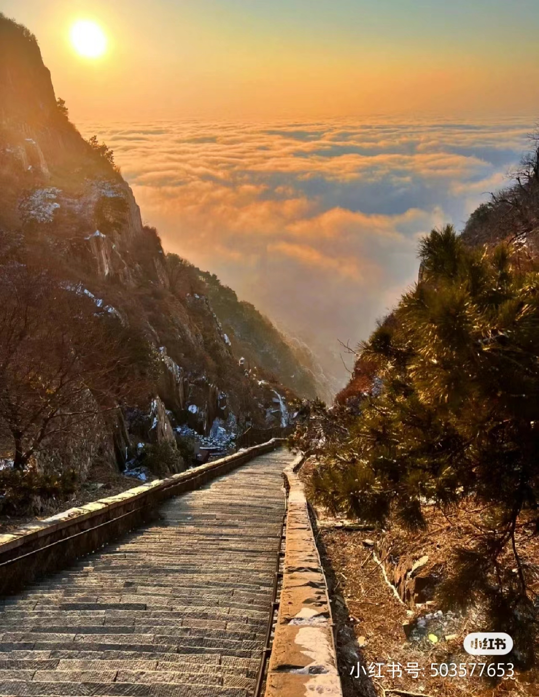

大美泰安
泰山，又名岱山、岱宗、岱岳、东岳、泰岳，为五岳之一，有“五岳之首”“天下第一山”之称
泰山相伴上下五千年的华夏文明传承历史，集国家兴盛、民族存亡的象征于一身，是中华民族的精神家园，东方文化的缩影，“天人合一”思想的寄托之地 [25] ，承载着丰厚的地理历史文化内涵 [16] ，被古人视为“直通帝座”的天堂，成为百姓崇拜，帝王告祭的神山，有“泰山安，四海皆安”的说法。自秦始皇起至清代，先后有13代帝王依次亲登泰山封禅或祭祀，另有24代帝王遣官祭祀72次 [1] 。山体上既有寺庙、宫、观等古建筑群29处，古遗址128处，有大小碑碣、摩崖石刻2000余处 [16] 。其景巍峨雄奇、幽奥俊秀，有石坞松涛、云海玉盘等美丽壮阔的自然景观。其历史文化、自然风光、地质奇观和谐融为一体，具有特殊的历史、文化、美学和科学价值。   